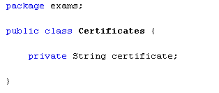
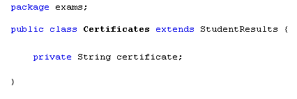
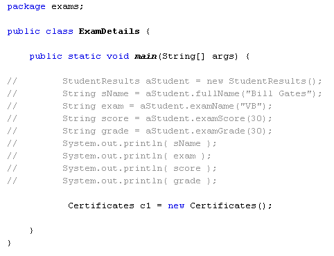
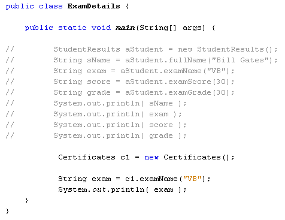
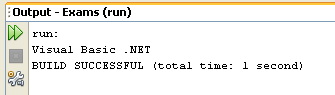
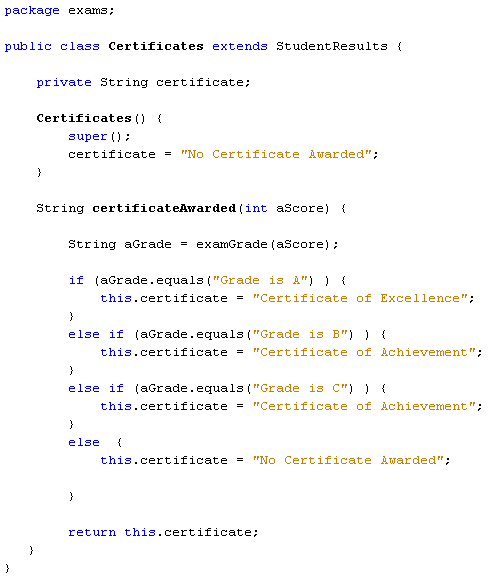
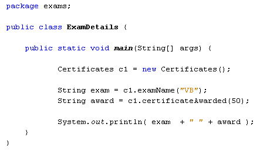
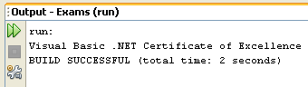

Learn Java- Complete Offline Beginners Guide
As an example of inheritance, we'll create a sub class that handles information about certificates. If the student gets an "A" grade, we'll award a Certificate of Excellence; if the student gets a "B" or a "C" we'll award a Certificate of Achievement. Any other grade and no certificate will be awarded. But the point about the sub class is to keep the certificates data separate from the exam data. However, we may still want to access some of the information about the exam, such as which exam it was. We can even access the methods that turn a score into a grade, and all from the sub class.
So, create a new class by clicking File > New File from the NetBeans menu. When the dialogue box appears, select Java under the Categories heading, and Java Class under File Types. Click Next, and enter Certificates as the name of your new class. Click Finish.
When your new class is created, add a private String field and call it certificate. Your new class should then look like this:

To create a sub class (child) from a Java super class (parent), the keyword extends is used. You then follow the "extends" keyword with the parent class you want to extend. We want to create a sub class from the StudentResults class. The StudentResults class will be the super class and the Certificates class will be the sub class.
After "public class Certificates" in your code add "extends StudentResults". Your code should then look like this:

You have now created a sub class that inherits the code from the StudentResults class.
Just like the StudentResults class we can create a constructor for this new Certificates class. When we create an object from the class, Java will first of all call our constructor.
However, only one constructor can be called. If we call a new constructor from the Certificates class all those default values we set up for the StudentResults class fields won't get set. To get around this, there is a keyword called super. This makes a call to the constructor from the super class. Add the following constructor to your Certificates class:

The name of the constructor is the same as the name of the class: Certificates. The first line of the code between curly brackets is the super call (note the round brackets after super). When this line executes, all the default fields we set up in StudentResults will be set.
The second line of code in the constructor sets a default value for the String field called certificate. (You can actually set up more than one constructor. You'll see how to do this in a later section.)
To test out your new class, go back to your ExamDetails class, the one with the main method. Comment out any code you have so far. A quick way to do this is to highlight all the code, and then click the comments icon on the NetBeans toolbar:
To get rid of comments, highlight the code again and click the uncomment icon.
Now add the following line to create a new object from your class:
Certificates c1 = new Certificates();
Your code window should look something like this:

The object name is simply c1. The type of object is a Certificates object.
To check that you can access the methods from the StudentResults class, add this line below you new c1 object:
String exam = c1.examName("VB");
This is exactly the same as you did before: called the examName method of the StudentResults class. This time, however, you're using a Certificates object rather than a StudentResults object.
Add a print line and your code should look like this:

Run the programme to see the following Output window:

So the method from the parent class (the super class) has been called into action. We can now add a method to the child class (the sub class). Add the following method to your Certificates class, just below the constructor:

The method is called certificateAwarded, and is set up to return a String value. Inside the round brackets of the method, we're handing over an exam score.
The first line of the method is this:
String aGrade = examGrade(aScore);
The method examGrade is a method in the parent class. It's the one we set up in StudentResults. This method, remember, was set up to return a grade and some extra text, "Grade is A", "Grade is B", etc. We're now calling it from the child class. The IF Statement checks the value of the aGrade string to see what's in it. Depending on the value a new string is returned, awarding a particular certificate: Excellence, Achievement, or no certificate.
Click back on your ExamDetails class, and add the following line:
String award = c1.certificateAwarded(50);
This line calls the new method, and hands it a value of 50. The result is returned to the String we've called award.
Adapt the print line method in your code to this:
System.out.println( exam + " " + award );
Your ExamDetails class should look like this (we've deleted all the comments):

And here is the Output window when the programme is run:

So we've used Inheritance to keep the exam details separate from the certificate details. The child class (sub) accessed the methods of its parent (super). We were then able to output data from both.
Inheritance, then, is enhancing (extending) the usefulness of a parent class. You keep data separate by putting it in a child class. But the child is related in some way to the parent, and can access some or all of its code. Like children everywhere, however, it does its own thing!
In the next section, you'll learn how error handling in Java.